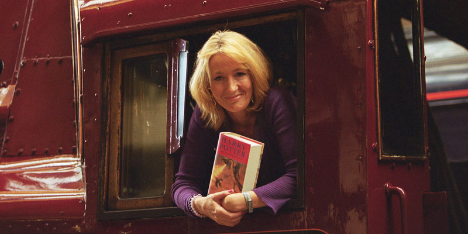
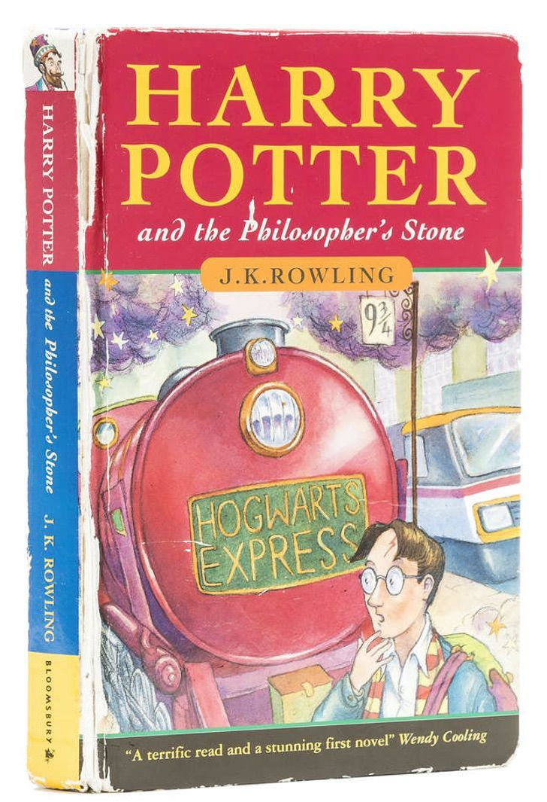
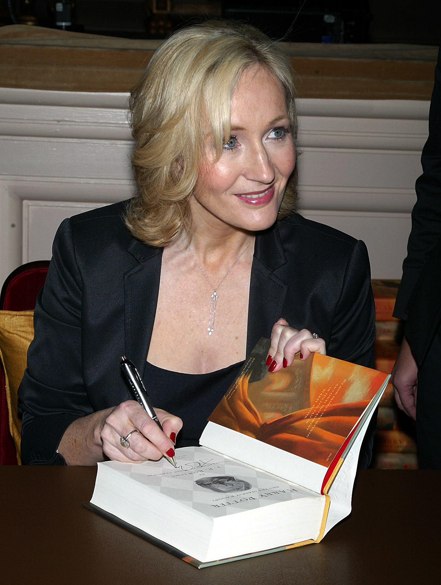

J.K. Rowlling
El auténtico nombre de J. K. Rowling es Joanne Rowling. Nació el 31 de julio de 1965 en Yate (Reino Unido).
Es una escritora británica conocida por ser la autora de la saga de libros de Harry Potter, el famoso niño aprendiz de mago, de los que se han vendido más de 400 millones de ejemplares.
Trabajó en Oporto (Portugal) como profesora de inglés. Más tarde se trasladó con su hija a Edimburgo (Escocia), donde vivía de las prestaciones del estado porque se encontraba sin empleo: fue entonces cuando comenzó la escritura de la primera entrega de Harry Potter, que concluyó en 1995. El título que escogió para este libro fue "Harry Potter y la piedra filosofal". J. K. Rowling encontró pronto representante pero tardó mucho en conseguir que fuera publicado: el libro fue rechazado por doce editoriales hasta que cayó en manos de Bloomsbury, una pequeña editorial londinense que aceptó a publicarlo, aunque con pocas esperanzas de conseguir con ello una gran inversión.
Al éxito del primero le siguieron seis entregas más: "Harry Potter y la cámara secreta", "Harry Potter y el prisionero de Azkaban", "Harry Potter y el cáliz de fuego", "Harry Potter y la Orden del Fénix", "Harry Potter y el misterio del príncipe" y "Harry Potter y las Reliquias de la Muerte", séptimo y último libro que concluye la serie.
J. K. Rowling recibió multitud de premios por su obra: el Premio del Libro Británico en la categoría Libro Infantil del Año, el Premio al Mejor Libro Infantil (que recibió en varias ocasiones) y fue nombrada escritora del año en los Premios Británicos de 2000, además de recibir otros títulos. Su obra ha significado un éxito sin precedentes en el ámbito de la literatura infantil, batiendo todos los records de ventas en su campo. También se han rodado varias películas basadas en los libros.
Algunos datos curiosos
Comienzos
A J. K. Rowling le surgió la idea inicial de escribir Harry Potter mientras viajaba en un tren desde Manchester hasta Londres. Después, el proceso de escritura de su primera novela lo desarrolló en varias cafeterías que frecuentaba, mientras aprovechaba el rato en que su hija dormía.
Progreso
Esta autora se encontraba en unas condiciones económicas difíciles, hasta que publicaron el primer libro de Harry Potter. En tan solo cinco años se convirtió en multimillonaria.
Perseverancia
Colocó las iniciales J. K. antes de su apellido en lugar de Joanne debido a una sugerencia de la editorial que publicó su primera novela, que creía que los chicos que leyeran el libro preferirían que hubiera sido escrito por un hombre. La letra K de su seudónimo la escogió por Kathleen, el nombre de su abuela.